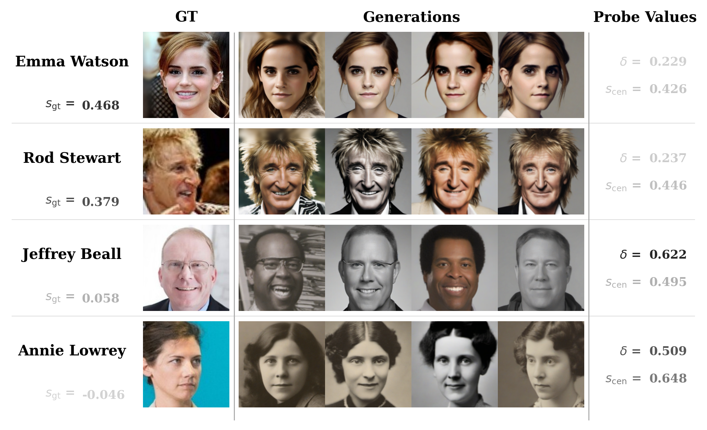
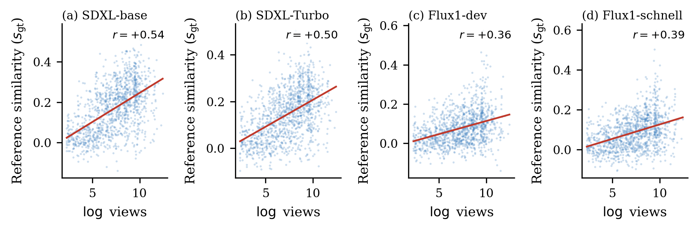

NAMESAKES
Probing Identity Memorization in Text-to-Image Models
1Carnegie Mellon University · 2Tel Aviv University · 3Cornell University
arXiv 2026
Abstract
Text-to-image (T2I) models generate realistic likenesses of some individuals when prompted with their names, raising privacy concerns. However, distinguishing whether a generated face is memorized or fabricated currently requires ground-truth photos, access to training data, or white-box access to model internals, limiting applicability. We introduce a fully black-box behavioral probe that distinguishes between a memorized name versus an unrecognized one, while requiring no reference photos or prior knowledge of training data. To perform this task, we present the NAMESAKES dataset of over one thousand names and faces of public figures spanning a wide range of fame levels, along with perturbed, less famous names. Experiments on state-of-the-art T2I models show that our probe substantially predicts identity memorization and separates memorized from unrecognized names, with further insights into differences across model families.
Method Overview
Given a T2I model and a name, our goal is to predict whether the model has memorized the associated identity—i.e., whether generations resemble the individual's real likeness—or whether it fabricates a plausible but ungrounded face. We define a ground-truth measure, reference similarity, as the mean facial-embedding similarity between generated images and a ground-truth photo. Our probe aims to predict this quantity without ever seeing the ground-truth photo, using only the model's own generations.
We propose two complementary, entirely black-box scores. Dispersion (δ) measures how consistent multiple generations of the same name are with each other: memorized identities produce tightly clustered faces, while fabricated ones vary more. Centroid similarity (scen) compares a name's average generation embedding to those of other names: unfamiliar names with similar demographic associations tend to converge to similar, generic-looking outputs, while memorized identities remain distinctive. Combining both probes via a simple linear model substantially predicts identity memorization across model families.

The NAMESAKES Dataset
To evaluate our probe, we introduce NAMESAKES, a dataset of 1,269 names and paired multimodal data extracted from English Wikipedia. Each entry consists of (1) a public figure's name, (2) a ground-truth photo of their face, (3) an estimate of their fame based on pageview counts, and (4) a perturbed name—a plausible but fictitious name that orthographically resembles the original (e.g., Jodie Foster → Jolie Fuster), constructed to minimize edit distance while avoiding collision with real celebrity names. Names are sampled via stratified sampling over log-pageviews, spanning a full spectrum of fame—from extremely famous individuals likely to be memorized by T2I models to relatively obscure public figures likely to produce fabricated faces.

We validate that fame is a meaningful proxy for memorization likelihood: log-pageviews correlate with reference similarity across all evaluated models (Pearson r = 0.36–0.53, all p ≪ 0.001).

Explore Examples
Browse pairs of real and perturbed names, and see how each of the four T2I models we evaluate responds. Real names often reproduce a consistent, recognizable likeness; perturbed names typically produce more varied, generic faces.
Results
We evaluate on four T2I models spanning base and distilled diffusion variants: SDXL-Base, SDXL-Turbo, Flux1-Dev, and Flux1-Schnell. Our combined probe achieves R² of 0.58 for SDXL-Base and 0.33–0.44 for the remaining models when predicting reference similarity—well above Cohen's large-effect benchmark—without ever accessing ground-truth photos. For the more practical task of separating memorized from unrecognized names, our probe achieves AUC of 0.86 (SDXL-Base) and >0.77 for all other models; restricting to high-fame names (where memorization is plausible) improves this further, to AUC 0.95 for SDXL-Base.
| Model | Predicting Reference Similarity (R²) | Real vs. Perturbed Separability | |||||
|---|---|---|---|---|---|---|---|
| δ only | scen only | Both | AUCall | Accall | AUChigh | Acchigh | |
| SDXL-Base | 0.547 | 0.128 | 0.581 | 0.859 | 0.791 | 0.947 | 0.902 |
| SDXL-Turbo | 0.288 | 0.171 | 0.438 | 0.772 | 0.723 | 0.835 | 0.777 |
| Flux1-Dev | 0.218 | 0.150 | 0.349 | 0.781 | 0.750 | 0.888 | 0.832 |
| Flux1-Schnell | 0.137 | 0.187 | 0.325 | 0.785 | 0.748 | 0.844 | 0.792 |
Cross-validated results on n = 1,269 items. all: full dataset; high: high-fame names (log-pageviews above median).
Ethical Considerations
NAMESAKES uses only openly-licensed Wikipedia images, adhering to their respective licensing and attribution terms; all subjects are public figures per Wikipedia's notability criteria. The dataset has protective intent—e.g., flagging memorized identities in T2I models to inform unlearning or regulatory compliance—and we will honor opt-out requests for removal. We report NAMESAKES's demographic skew (majority White/male, inherited from English Wikipedia) for full transparency, and find that our probe is less effective on faces identified as Black or female, consistent with known disparities in the underlying face-recognition and T2I models it builds upon. We recommend using this probe for privacy auditing purposes only, not as a conclusive standalone determination of memorization for any single name.
Citation
If you use NAMESAKES in your work, please cite:
@article{alper2026namesakes,
title = {NAMESAKES: Probing Identity Memorization in Text-to-Image Models},
author = {Morris Alper and Vasudha Varadarajan and Moran Yanuka and Angelina Wang and Hadar Averbuch-Elor},
year = {2026},
eprint = {2606.20155},
archivePrefix = {arXiv}
}